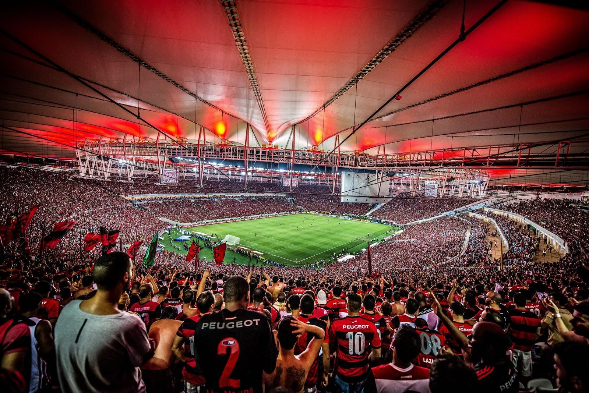
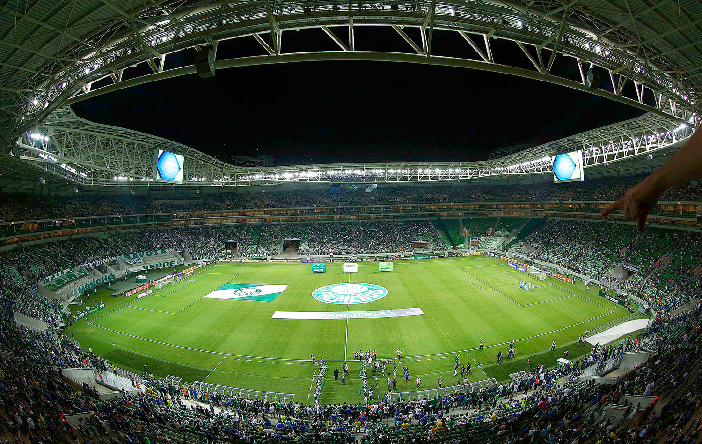
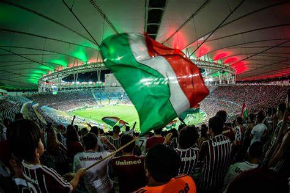

Craques Brasileiros

O Brasil é famoso por produzir alguns dos melhores jogadores de futebol do mundo, como Pelé, Ronaldo, Ronaldinho e Neymar. Seu talento e conquistas inspiraram gerações, garantindo que o país mantivesse sua reputação como potência do futebol global.
Futebol Feminino
O futebol feminino no Brasil está em crescimento, desafiando estereótipos e ganhando destaque nacional e internacionalmente. Apesar dos desafios como disparidade de investimento e sexismo, a criação de ligas profissionais e os sucessos da seleção brasileira feminina têm inspirado uma nova geração de talentos. O futuro promissor reflete um aumento de interesse e apoio ao esporte, indicando progresso em direção à igualdade nos campos de jogo.
Violência nos Estádios

A violência nos estádios de futebol é uma preocupação crescente no Brasil, com confrontos entre torcidas organizadas e atos de vandalismo prejudicando a segurança e a imagem do esporte. Apesar dos esforços das autoridades e dos clubes, a violência persiste como um desafio, exigindo medidas mais abrangentes e a promoção de valores de respeito e tolerância entre os torcedores.
Impacto Econômico do Futebol Brasileiro

O futebol brasileiro tem um impacto econômico significativo, gerando receitas através de várias fontes, como venda de ingressos, direitos de transmissão televisiva e eventos. Isso impulsiona a economia local, estimula o turismo e o comércio, além de contribuir para a indústria de mídia e entretenimento. No entanto, desafios como má gestão financeira e a pandemia de COVID-19 apresentam obstáculos para o crescimento sustentável do esporte.